Jaison Justus
jaison.justus.lp@gmail.comI'm a Designer helping software businesses to design stable and scalable software systems for more than seven years.
My approach on building software product is a combination of design and technology. I believe in the triangulation of function, experience and aesthetics. Over the time, worked with best teams across many startups and enterprises. With them, designed products and services like the sketch to code conversion tool, on-demand taxi service, internal business tools, public engagement platform and more. Professionally, I call myself a Designer. But personally, I'm a maker. I devote a good amount of time to learn, build and teaching new things. This is a quick briefing about me. For more details feel free to drill down the sections below.
Design Principles

Design is not only about aesthetics, more than that, it's a structured process. A process of scripting conversations for the business to interact with their user. And help them achieving their goals.
During the interaction, the business should drive the users. Because users are always clueless and looking for information to fulfil their goals.
- Design is not only about aesthetics, more than that, it's a structured process. A process of scripting conversations for the business to interact with their user. And help them achieving their goals.
- During the interaction, the business should drive the users. Because users are always clueless and looking for information to fulfil their goals.
- To drive the users seamless, the interface should be clean and simple as well as usable and intuitive.
- All the design decisions are bound to some business goals, and it should be measurable.
- On reaching the solution, if you ask user, how do you feel? And his answer is what I call experience.
- Last but not the least, Failures, they are the best teacher.
Personal Projects
Todo Tab


A simple to-do list for your browser, feature on Product Hunt top 10. This extension hijacks your browser new tab and replaces the default page with a todo list to make you reminds me about the tasks. In other words, a psychological move to make you responsible for those whose spend time on browser for no reason. The key feature of this todo is Activity colouring, parse all task for a standard verbs set and colour it to recognise task faster. – chromestore/todotab
Chapi


A personal knowledge management tool for the web. Chapi helps you to reduce your cognitive load on copy and pasting text from the website into your notepad and keeps you productive while browsing the internet. Not only text but also you can save images and bookmark web pages page. Chapi also provides you with a personalised space where you can recollect your saved contents quickly. – http://chapiapp.com
Facemash


Facemash is an illustration project and one of my flagship project. The project is about choosing 100 random friends from our Facebook list and gift them their illustrated portraits. I started this project as fun, but later a streak of dedication and overwhelming responses changed the fun into bliss. – Behance/Facemash
Wireframing Kit for AdobeXD
Popular wireframing kit in the Adobe XD community. The kit helps to bring the prototyping power of Adobe XD into wireframing. Kit features a good collection of web components and bland design to avoid visual biasing while prototyping. – Read More
Illustration Projects
Thinking about killing time Digital Illustration is my another option. I'm not a pro illustrator, but I love to mirror my thoughts and imaginations. So far I have done more than 53 personal projects, which you can find it out my behance page
Mindset
“Design a software is not only setting up aesthetics. It's a structured process of scripting conversations for the business to interact with their end-users. And provide solutions for their real-life problems.”
For any software business, GUI is the universal endpoint to interact with their end-users. During their interaction, users will be clueless and look for information to fulfil their goals. So the business should always drive the user to the goal through right information at the right time. And the measure of the outcome of this interaction is the so-called experience.
So as a designer my job is not to make eye candies. Instead, create a better understanding of the business goals and the user. And focus on improving the quality and experience of the user's journey.
Skills & Tools
- Methodologies & Paradigms: Human Centric Design, B.E.M, Object Oriented Programming, Modular Programming, Microservices Architecture, Agile.
- Processes: Information Architecture, Mind mapping, Sketching, Wireframing, Prototyping, Visual Design, Workshop, User Testing, Survey, Interview.
- Web Technologies: HTML, CSS, Javascript (ES5).
- Tools: Omnigraffle, Adobe XD, Affinity Designer, Sketch, Git.
- Bonus: Component Design, Developer language.
Process
“An iterative process focuses on researching and converging the needs of the business and the users into a medium.”
My design process is a four stage process based on Human-Centric and BEM approach. And they are Learn, Ideate, Develop and Monitor. (Fig-2)

Learn
The first step in my process is to learn about the user, problem space and the offering. And define the problem statement that are going to solve. To define the problem, first get an understand about the business and their end-user. For creating a better understanding, I collect many data sets from the target user as well as stakeholders. Collection of data sets usually involves different methods like observation, survey and interview. And once I have enough datasets, I extract out the scope which becomes the foundation of my solutions.
But, sometimes these datasets might not be accurate and results in failures. Then again, these failures leave some insights behind to improve.
“Failures are the best Teacher.”
Ideate
One of my favourite as well as the vital stage. Now that we have the scope and a better understanding of the problem, the next step is to churn out ideas. For churning, my catalyst is brainstorming with a combo of divide and conquer, mapping and sketching. There is no rules or regulation in this stage. Instead, it's an open canvas to put down all the ideas and inspirations.
Develop
Now that I have the many solutions, it's time for cherry-picking the best ideas from the sketches and compile into wireframes. When the wireframes are ready, share the artefacts with the stakeholders for the review. And based on the review, prepare mockups with a fresh coat of colours and typeset. As a next step, prototype the mockup to test it with users to find out what works and what needs changes.
Monitor
All the design decisions are bound to some business goals, and it should be measurable. So on deploying the interface, I set up a tracking plan to measure the business goals. Tracking plan is nothing but a list of KPI's along with corresponding user actions. Another advantage of setting up an analytics is the reports. These reports help us to analyse the patterns and variations in user behaviours. Also, give statistical reasoning for improvements and flaws.
Experience
Design consultantIndependent |
Product Designer |
Product Designer |
Javascript Developer |
Javascript Developer |
Software Engineer |
GIS Engineer |
GIS Engineer |
Speaker
Sketch WorkshopBangalore JS Community 2015 |
Games Teach You UXMeta Refresh 2015 |
How last year Meta Refresh helped me with CSSMeta Refresh 2014 |
Javascript is a DJJSFoo 2013 |
Education
Bachelor in TechnologyComputer Science Engineering, Kerala University |


Project Showcase
Todo Tab
How can I travese my todo quickly and choose a task from it?
Activity colouring – Todo Tab parses your tasks and looks for activities like call, meeting, reply, etc. and show it in different colours. This colour scheme will help you to traverse the list faster and give a quick overview of your todo list. Currently, the tool parses a standard set of activities. In the upcoming version, adding the ability to add custom activities. – chromestore/todotab
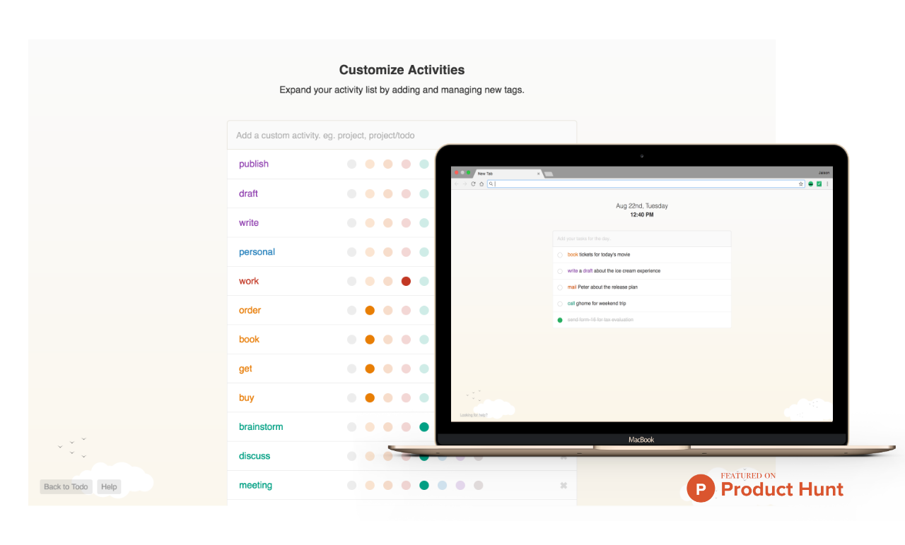
UIPad - NDA
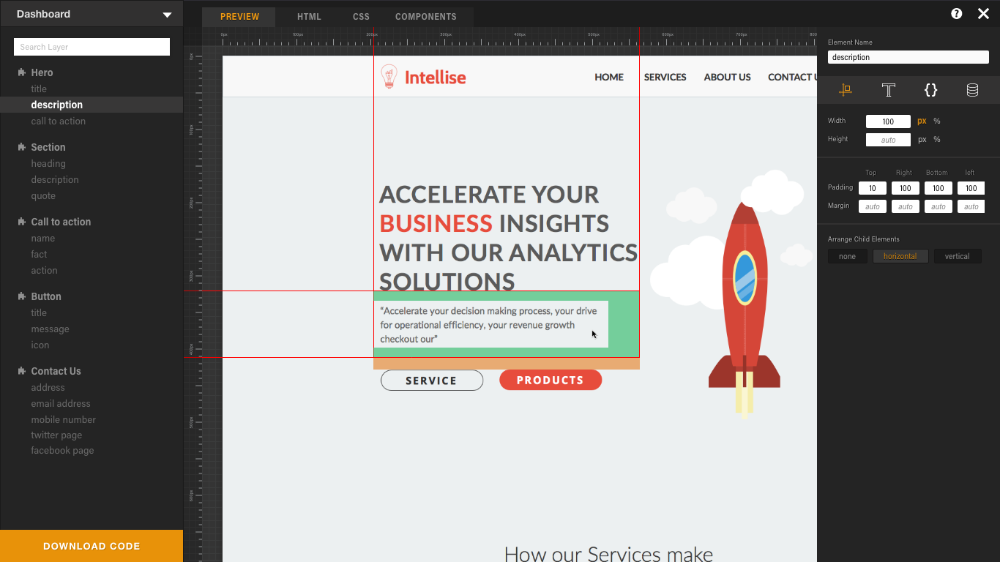
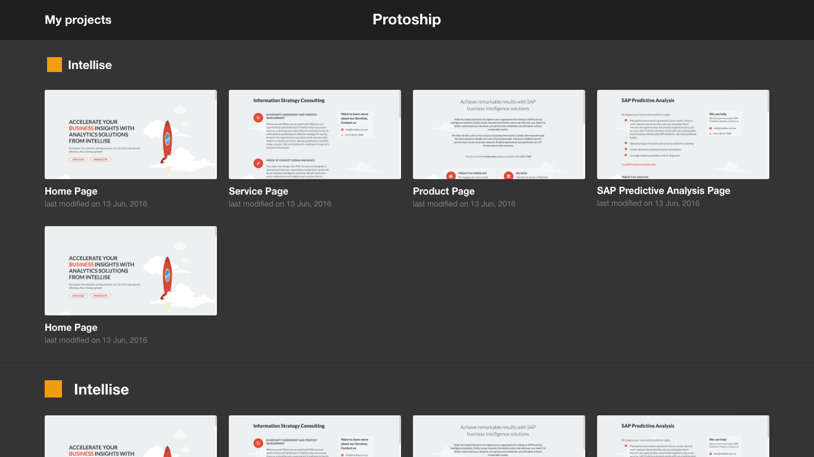
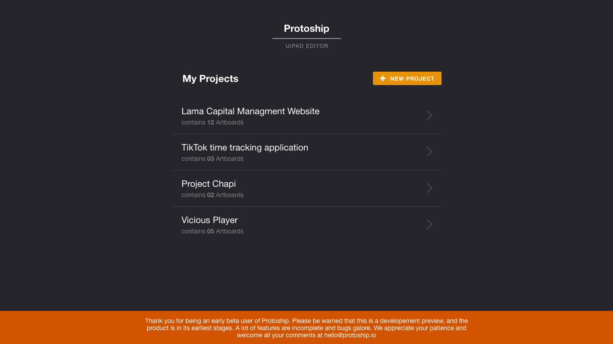
UIPad is a code generator for designers and front-end programmers that creates HTML, SASS, and React components from a Sketch design. You will be able to go from a design to a working application in a matter of hours instead of having to go through the tedium of writing HTML and CSS manually.
Baxi - The Bike Taxi
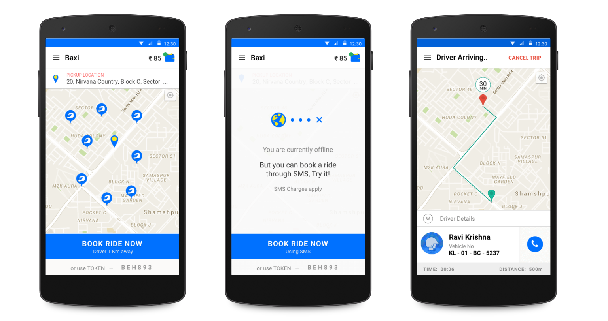
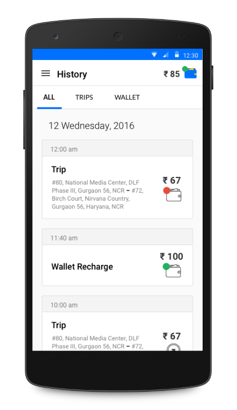
Your ride is just a tap away!
Baxi is India's first on-demand bike taxi service launched on 2015. In the early days as a part of the team, my job is to take the collective thoughts from the stakeholders and compile it in a short time. The most challenging part of the project is the timeline. We were running on a tight schedule along with our competitor.
The best experience so far I designed in Baxi is the booking system. Being a simple mode of transport, You can book a Baxi bike in one tap. Also, you can book a ride even if you're offline - “Yes, you don't require internet to book baxi!”. Or if you see a Baxi bike in front, you can book it by exchanging token with the driver. To avail a token, you don't require an app. You just need to give a missed call to a number, and we will send you a ride token.
Chapi
Save anything from the web
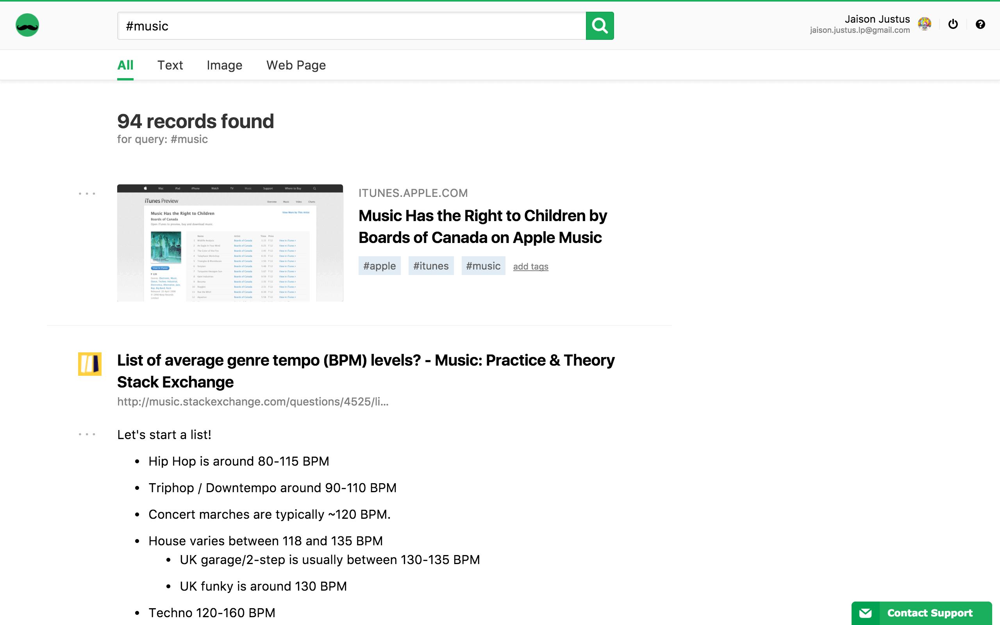
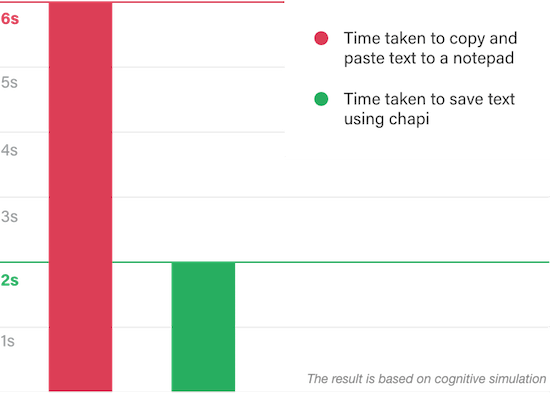
A personal knowledge management tool for the web. Chapi helps you to reduce your cognitive load on copy and pasting text from the website into your notepad and keeps you productive while browsing the internet. Not only text but also you can save images and bookmark web pages page. Chapi also provides you with a personalised space where you can recollect your saved contents quickly.
Long Live the Podcast - NDA
A lightweight podcast discovery platform based on categories
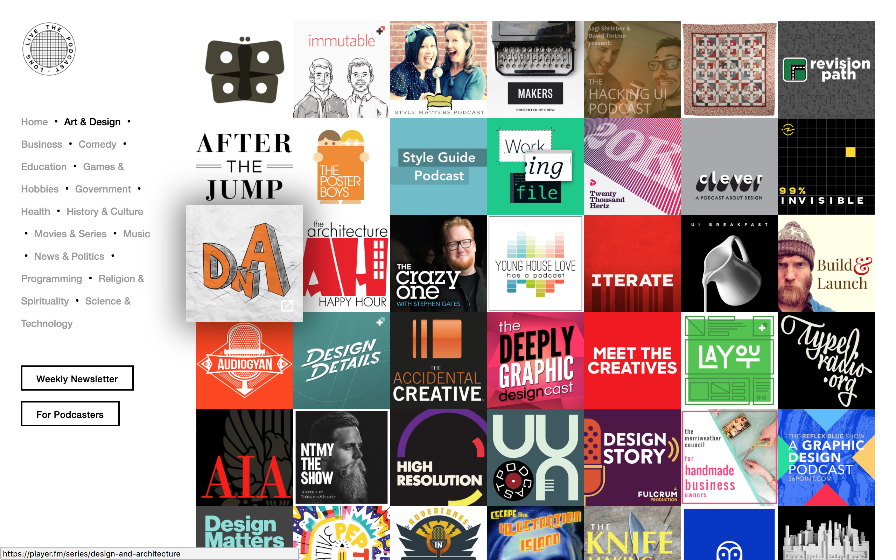
From last year onwards podcast started taking a rise back to popularity. But at the same time, there is no ecosystem to support the podcast listeners to discover new channels and episode. Were, Long Live the Podcast focuses on providing a collage of links to podcast channels along with a weekly notification about the new episode release and new channels.
Speaker
-
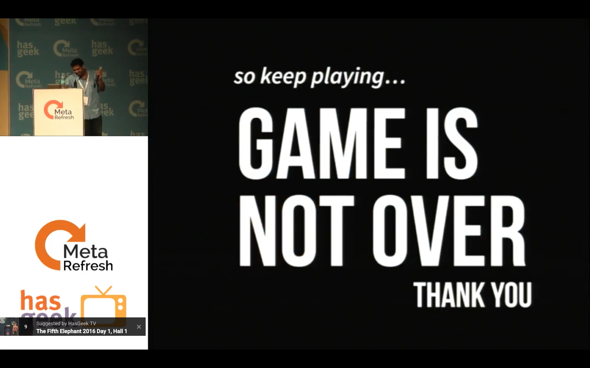
Games Teach You UX
-

How last year Meta Refresh helped me with CSS
-

Javascript is a DJ